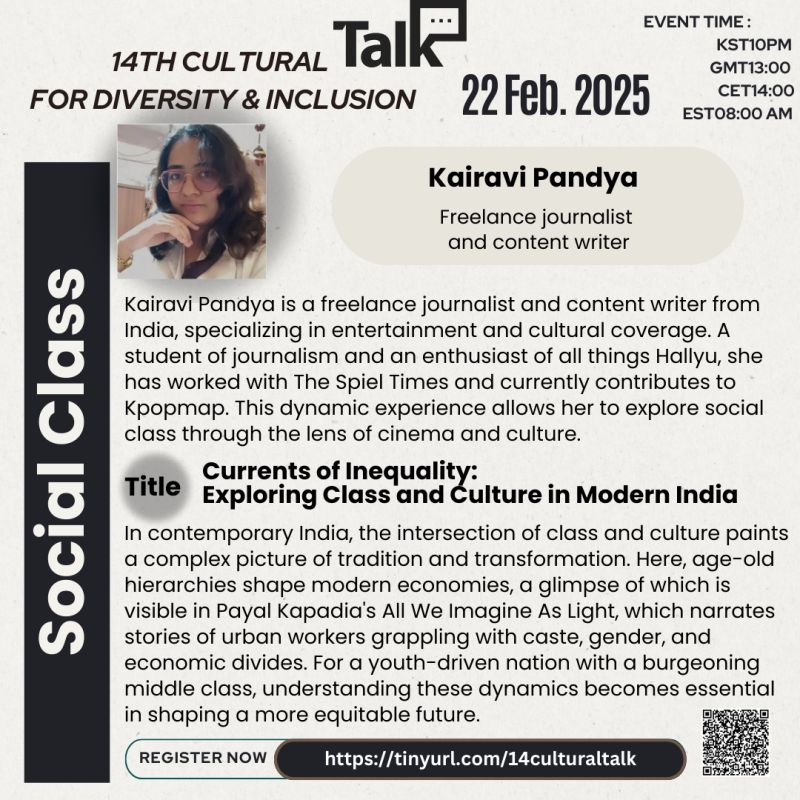
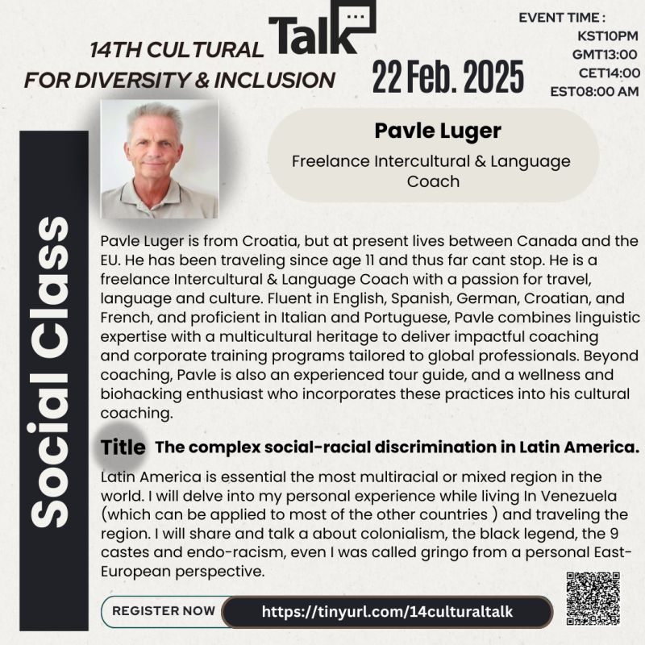
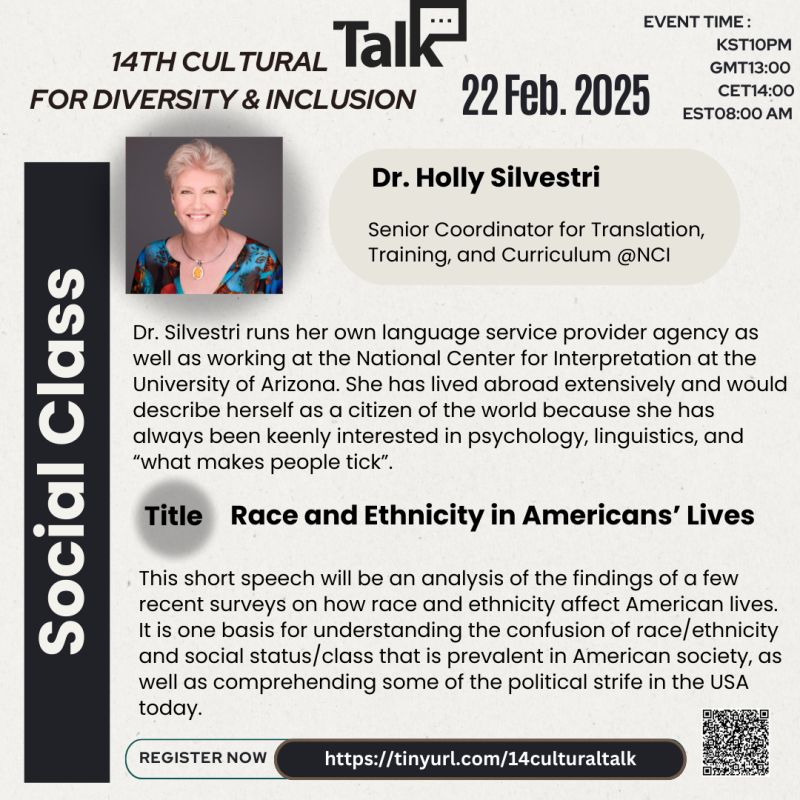

14th Cultural Talk For Diversity
Theme: Social Class

Event Details
Date: 22 February, 2025
Time: 22:00 (KST) / 13:00 (GMT) / 14:00 (CET) / 08:00 (EST)
This event has already taken place and is now part of our archive.
Conference Overview
This session explored social class as a lived cultural reality rather than only an economic category. Through perspectives from India, Latin America, and the United States, the speakers unpacked how class intersects with race, caste, identity, and public life while shaping opportunity, dignity, and belonging.

Kairavi Pandya
Freelance journalist and content writer
Kairavi Pandya is a freelance journalist and content writer from India who focuses on entertainment and cultural coverage. With a background in journalism and a strong interest in Hallyu and media culture, she brings a sharp eye to how cinema reflects wider social realities.
Topic: Currents of Inequality: Exploring Class and Culture in Modern India
Using contemporary India as a lens, this talk looked at how class, caste, gender, and economic divides continue to shape everyday life. It also reflected on how film and cultural storytelling reveal the tensions between tradition, aspiration, and structural inequality.

Pavle Luger
Freelance Intercultural & Language Coach
Pavle Luger is a freelance intercultural and language coach from Croatia who has lived between Canada and Europe while building a global career around language, travel, and culture. Fluent in multiple languages, he designs coaching and training experiences for internationally minded professionals.
Topic: The Complex Social-Racial Discrimination in Latin America
Drawing on personal experience in Venezuela and travel across the region, Pavle examined how colonial histories, racial mixing, and class hierarchies shape discrimination in Latin America. The talk highlighted the complexity of privilege, identity, and social perception across multicultural societies.

Dr. Holly Silvestri
Senior Coordinator for Translation, Training, and Curriculum at NCI
Dr. Holly Silvestri leads translation- and curriculum-related work at the National Center for Interpretation while also running her own language services agency. Having lived extensively abroad, she brings an intercultural perspective grounded in psychology, linguistics, and social analysis.
Topic: Race and Ethnicity in Americans' Lives
This talk reviewed survey-based insights into how race and ethnicity influence social status, identity, and opportunity in the United States. It offered a practical entry point for understanding why class and racial narratives are often entangled in American public life.